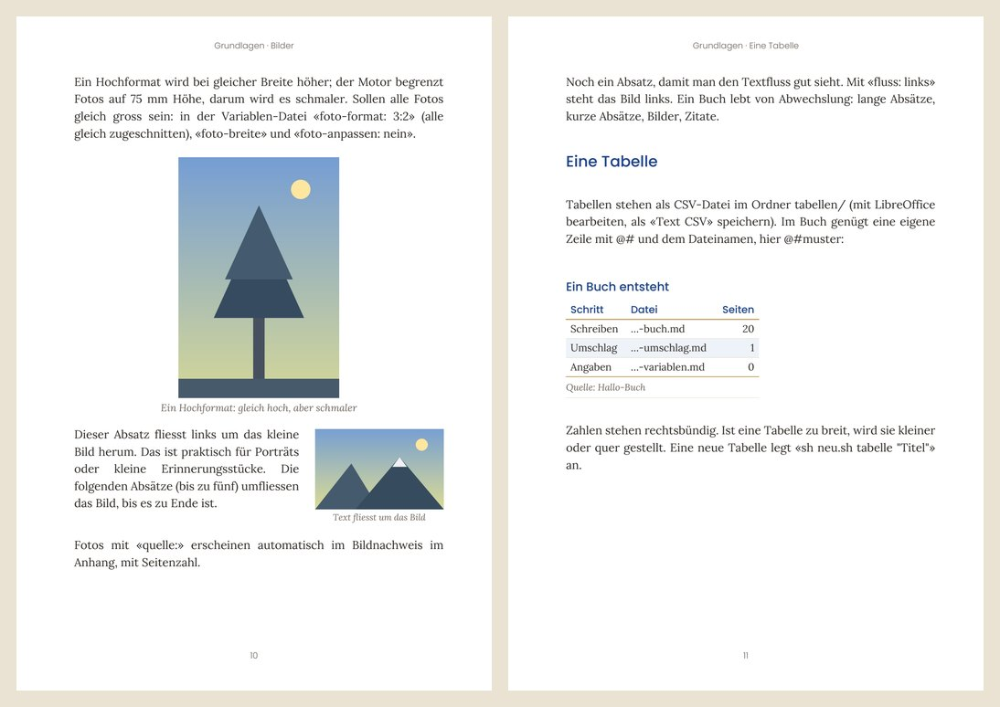
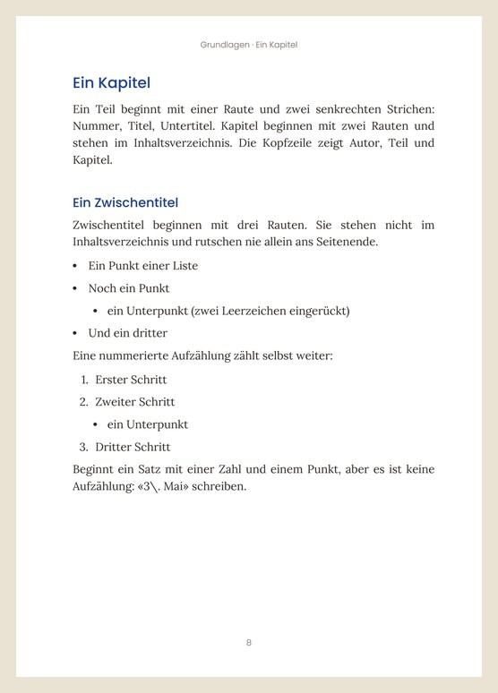

Du schreibst in einfachen Textdateien (Markdown), für Besonderes gibt es kurze Befehle wie @ZITAT-ZIER oder @PLATZ. pureSATZ macht daraus ein druckfertiges Buch im gewünschten Format, mit Umschlag und E-Book – für epubli, BoD, KDP und andere Plattformen oder zum Selberdrucken.
Dazu Leseprobe, Korrekturfassung fürs Lektorat, Booklet für den Probedruck und Werbebilder – alles aus denselben Dateien.
Auf Linux, Mac und Windows.
⬇ pureSATZ herunterladen (ZIP)Auf GitHub ansehenVersion 2.31.1 · kostenlos für eigene Bücher · ohne Konto, ohne Cloud
Dein System ist schon gewählt – sonst einfach umschalten.
ZIP laden, auspacken und den Ordner pureSATZ-main in pureSATZ umbenennen. Mit git geht auch:
git clone https://github.com/tgsteiger/pureSATZ.gitgit clone https://github.com/tgsteiger/pureSATZ.git
Im Dateimanager Rechtsklick in den Ordner pureSATZ → «Im Terminal öffnen».
Prüft alles und installiert, was fehlt (Python, auf Wunsch git):
bash pc-einrichten/linux-einrichten.shbash pc-einrichten/linux-einrichten.sh
Legt ein Beispielbuch an, baut es und öffnet das PDF. Beim ersten Mal etwa eine Minute.
sh hallo.shsh hallo.sh
Fragt Titel, Autor und Format ab und legt dein Buch neben pureSATZ an.
sh setup/setup.shsh setup/setup.sh
Python ist auf Linux meist schon da; das Einrichten ergänzt, was fehlt.
ZIP laden (Safari packt es selbst aus) und den Ordner pureSATZ-main in pureSATZ umbenennen.
Programme → Dienstprogramme → Terminal. cd tippen (mit Leerzeichen), den Ordner pureSATZ ins Fenster ziehen, Enter.
Prüft alles. Fehlt Python, öffnet sich python.org: den «macOS 64-bit universal2 installer» laden, installieren und den Befehl nochmals starten.
bash pc-einrichten/mac-einrichten.shbash pc-einrichten/mac-einrichten.sh
Legt ein Beispielbuch an, baut es und öffnet das PDF. Beim ersten Mal etwa eine Minute.
sh hallo.shsh hallo.sh
Fragt Titel, Autor und Format ab und legt dein Buch neben pureSATZ an.
sh setup/setup.shsh setup/setup.sh
Python 3.10 oder neuer: python.org · git (freiwillig): git-scm.com
ZIP laden, Rechtsklick → «Alle extrahieren …» und den Ordner pureSATZ-main in pureSATZ umbenennen. Steht darin nochmals ein Ordner pureSATZ-main (das macht Windows gern), den inneren nehmen.
Im Ordner pc-einrichten die Datei win-einrichten.bat doppelklicken. Fehlt Python, wird es installiert (oder python.org öffnet sich: beim Installieren «Add python.exe to PATH» anhaken). Danach das Fenster schliessen und die Datei nochmals starten.
Im Ordner pureSATZ hallo.bat doppelklicken. Legt ein Beispielbuch an, baut es und öffnet das PDF. Beim ersten Mal etwa eine Minute.
Rechtsklick in den Ordner pureSATZ → «Im Terminal öffnen» (PowerShell).
Fragt Titel, Autor und Format ab und legt dein Buch neben pureSATZ an.
.\setup\setup.bat.\setup\setup.bat
Python 3.10 oder neuer: python.org · git (freiwillig): git-scm.com
Klappt etwas nicht? In der Hilfe unter «Start» stehen die Checkliste und «Wenn etwas klemmt» mit den häufigsten Meldungen und was zu tun ist. Nach dem Bauen zeigt 00-UEBERSICHT.txt im Ausgabeordner, welche Datei wofür ist.
Seiten aus dem Hallo-Buch, genau so, wie sh hallo.sh es baut.


Öffentliche Fassung und z. B. «Unzensiert» oder «Director's Cut» aus demselben Text.
A5, Taschenbuch, Sachbuch, A4, Quadrat oder ein eigenes Mass. Buchblock und Umschlag mit Rücken für epubli, BoD und andere Plattformen (Hardcover und Softcover), Probedruck als Booklet.
EPUB mit Inhaltsverzeichnis, Bildbeschreibungen und Leseprobe – aus denselben Dateien.
Jede Geschichte eine Datei, mit Stand von der Idee bis fertig und einer Übersicht.
Tabellen aus CSV, Fotos in einheitlicher Grösse, Aufzählungen, Zeitstrahl – und Farbschemas, die du mit einer Zahl umschaltest.
Hilfe mit Suche, automatischer Verlauf jeder Fassung, ZIP-Sicherung, auf Wunsch GitHub.
Ohne GitHub geht alles genauso. Mit GitHub ist dein Buch privat gesichert und du schreibst auf mehreren Computern.
sh sync.shGenaue Anleitung mit allen Befehlen: INSTALLATION.md